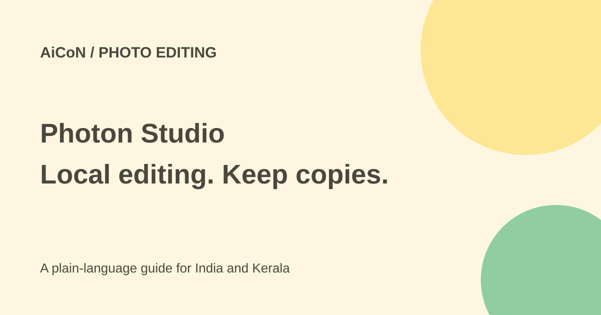

Photon Studio: free local photo editing and PSD checks
Photon Studio from Tenzen is a free desktop photo editor with layers, masks, retouching and PSD support. Its current product page lists macOS, Windows and Linux. Editing and AI selections run on your computer without an account.

What does it include?
The product page describes selections, layers, masks, text, shapes, colour adjustment, healing, Liquify and effects. It follows a Photoshop-like toolbox and shortcuts. It is not Adobe Photoshop and no Adobe affiliation is established.
A layer is a separately editable part of a design. A mask hides selected parts without deleting the underlying pixels. Those tools help a student make a poster or a small shop prepare a product photo while retaining an editable original.
PSD support has limits
Tenzen says Photon opens PSD and PSB files with layers, groups, masks, text, effects and smart objects. Its launch blog also warns that not every Photoshop feature makes an identical round trip.
Keep the source document and save an edited copy. Check text, effects, masks and format warnings. If another person will continue the work in Photoshop, have them check the copy in that app before treating the handoff as finished.
What runs locally?
The maker says editing, subject selection and background removal run on the computer. The product page says there is no upload step, queue or account needed to open a file and work. Signing into a Tenzen account is optional for connected features.
That is evidence about local editing, not a broad promise that no connected feature or website ever communicates online. Keep ordinary download, account and update activity separate from the claim about photo processing.
How to try a simple edit
- Open the exact Tenzen Photon page and choose your operating system.
- Use its official download or store route. Avoid other products called Photon and unknown installer mirrors.
- Back up a sample photo or layered document before opening it.
- Make one small adjustment on a copy, using a separate layer where possible.
- Try subject selection or background removal and inspect the outline at full size.
- Check hair, glass, soft edges and parts with similar background colours.
- Save an editable copy and export the final image in the format you need.
- Open the exported file separately and inspect its size, crop, colour and readability before sharing.
Free or paid?
The current page describes the whole Photon app as free, not a time-limited trial, with no account required. It says local selections and masks do not consume Tenzen credits.
The same page advertises other paid Tenzen products and online AI credits. Those do not make Photon itself a paid subscription. This guide does not quote those separate products as a Photon price. No Indian payment is needed for the stated free app.
For Kerala creators
A shop owner can work on a photo locally instead of uploading customer or product images to a cloud editor. Still follow copyright, consent and workplace rules. Removing a watermark does not give rights to a picture, and retouching must not misrepresent a product.
Automatic selections need visual inspection. A cutout can leave missing hair, a rough edge or translucent material filled incorrectly. The maker itself says a quick result needs a check. We did not install the app or test a difficult PSD.
Current platform and download notes
The September introduction names macOS and Windows, while the current product page also lists Linux. Use the current download options rather than assuming the launch list is final.
The launch blog describes entering an email to receive a download link, while the product page says no account is needed to edit. An email-delivery step, if shown, is different from an editing subscription or mandatory app account.
What changed since the original post?
The free local-editor claim remains supported. This guide adds the maker's PSD compatibility caveat, separates other Tenzen paid products and preserves the current versus launch platform differences. No hands-on performance claim is made.
Frequently asked questions
Is this Adobe Photoshop?
No. It is a separate Tenzen product.
Do local selection tools use paid credits?
The current page says they do not.
Can I trust every saved PSD immediately?
No. Keep the original and check the edited copy and its next-app compatibility.
Sources: Current product and download route · Official introduction and compatibility caveats. Checked 7 October 2026.